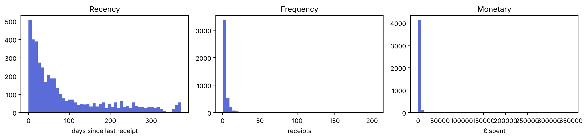
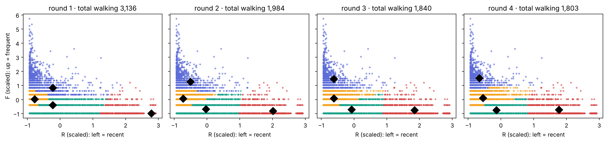
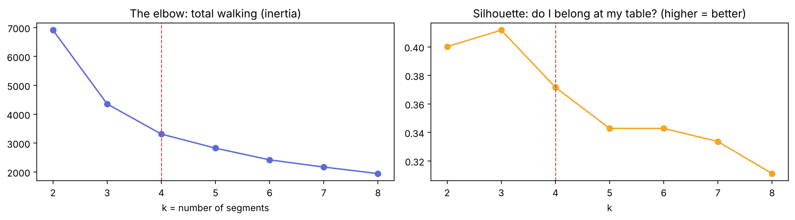
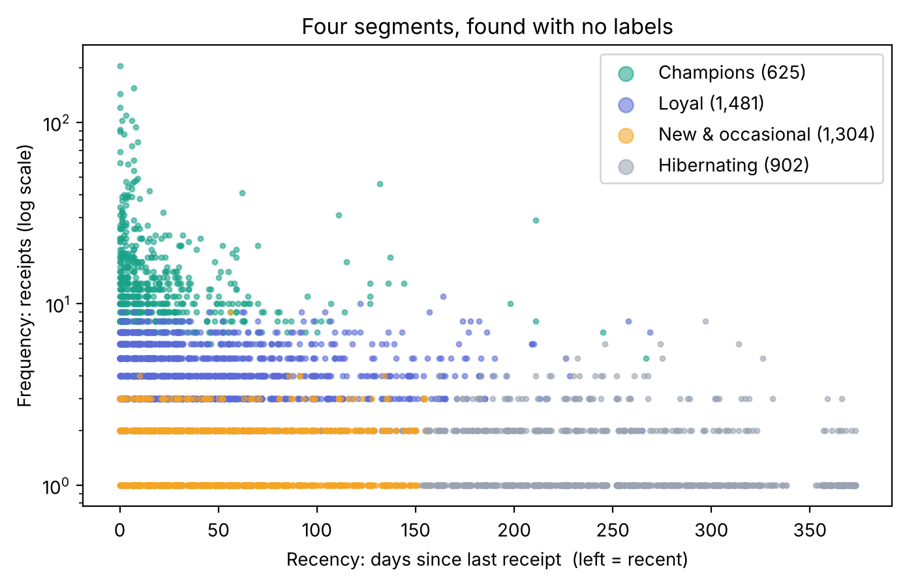
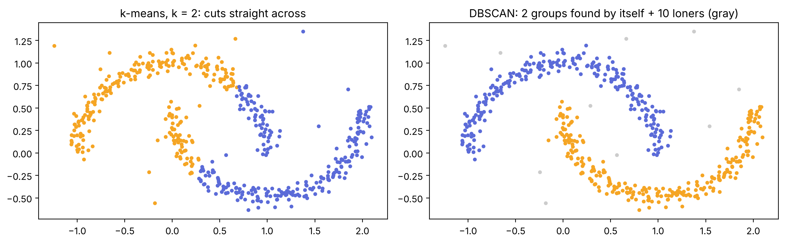
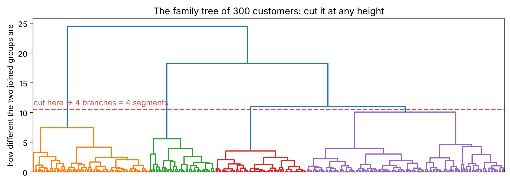
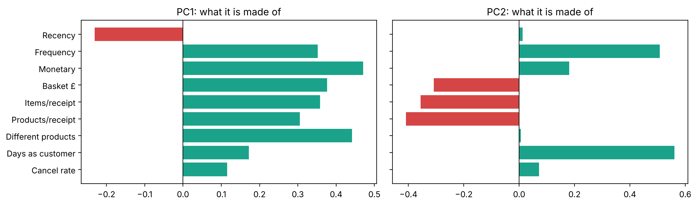
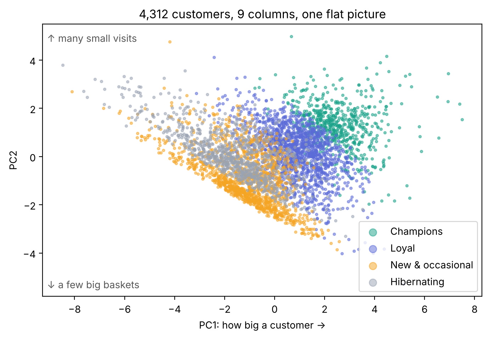

Segments, structure & anomalies, on a real gift shop's sales, three days before Black Friday
Every row came with the answer: canceled? churned? price? The model learned to copy the answer.
No answer anywhere. The data shows us groups, directions and oddballs. The business supplies the meaning.
Nobody labeled anything, yet you find the socks, the shirts… and the one red sock in the white wash.
A real UK online gift shop · every sale, Dec 2009 – Dec 2010
🎮 Before each idea: one game in The Segments Explorer · break at 6:05
Invoice Description Qty Price Customer Date 489434 15CM CHRISTMAS GLASS BALL 20 LIGHTS 12 6.95 13085 Dec 1 2009, 7:45 489434 PINK CHERRY LIGHTS 12 6.75 13085 Dec 1 2009, 7:45 489434 SAVE THE PLANET MUG 24 1.25 13085 Dec 1 2009, 7:45 …
rows
receipts
Dec 2009 – Dec 2010
of all rows. A guest checkout can't go into anyone's history.
rows (invoice starts with C). Money going back, not a purchase.
customers · 19,213 receipts · £8.8 million
Days since the last receipt.
Coffee shop: "was here yesterday"
Number of different receipts.
"comes every morning"
Total £ spent.
"always gets the big one"
| receipt | date | lines | £ |
|---|---|---|---|
| 529924 | Oct 31 | 40 | 611.53 |
| 537626 | Dec 7 | 31 | 711.79 |
| R | F | M |
|---|---|---|
| 2 days | 2 | £1,323 |
rfm = sales.groupby('Customer ID').agg(Recency=…, Frequency=…, Monetary=…) # 4,312 rows
?
?

Typical customer: 2 receipts, £706. Biggest: £349,164. The top 5 bring in 1 pound in 8.
One bought last week, one last winter.
£1,000 vs. £1,300. Practically the same.
Like comparing people by height in meters and weight in grams. Grams win every argument.
k-means looked only at money. Useless for marketing.
£100 → 4.6 · £1,000 → 6.9 · £100,000 → 11.5
Every ×10 is the same step.
0 = typical · +1 = one spread above · −2 = two below. Now R, F and M get equal say.
Z = StandardScaler().fit_transform(np.column_stack([R, np.log1p(F), np.log1p(M)]))
Place 4 hosts. Everyone walks to the nearest one. Hosts move to the middle. Repeat.
Mission: beat the computer's total walking.
Anywhere in the room.
…to the nearest host. Now there are k groups.
…to the middle of their group.
…until nobody switches groups.
host = centroid · total walking = inertia

Stuck in a poor answer. Fix: spread-out starting hosts (k-means++) and 10 tries (n_init=10).
The whales take over. Fix: log + standardize (Step 6).
km = KMeans(n_clusters=4, n_init=10, random_state=835).fit(Z)
Slide k from 1 to 8 on 400 real customers. Watch the elbow, the silhouette and the table.
Mission: which k would you defend to the boss?
One campaign for yesterday's buyer and last winter's.
Walking always falls with more groups. Look for where it stops falling fast.
Closer to my own group than to the next one? −1 to +1, higher = cleaner.
…and nobody can make, stock or market them.

Silhouette above 0.5 = clean islands · 0.25–0.5 = typical business data · ours: 0.37 at k = 4
| segment | customers | days since last | receipts | spent | % customers | % revenue |
|---|---|---|---|---|---|---|
| Champions | 625 | 11 | 11 | £4,354 | 14% | 64% |
| Loyal | 1,481 | 35 | 4 | £1,315 | 34% | 26% |
| New & occasional | 1,304 | 48 | 1 | £328 | 30% | 5% |
| Hibernating | 902 | 247 | 1 | £285 | 21% | 4% |
1 customer in 7 brings in 2 pounds in 3.
Thursday night preview. No discount needed: say thank you.
"Spend £X, get free shipping."
A second-purchase coupon: the hardest, most valuable step.
"We miss you." A paid campaign costs more than they're worth.

What's wrong with that sentence?
Agreement with our segments: 0.97 – 1.00 (1 = identical). The segments hold.
Two dials: reach and crowd size. No k.
Mission: find both moons and send the loners to gray.

reach = eps · crowd size = min_samples · loner = noise (label −1)
| typical customer (median) | days since last | receipts | spent |
|---|---|---|---|
| in a dense group | 48 | 2 | £668 |
| loner (noise) · 7% | 144 | 4 | £1,974 |
Spend 3×, buy 2×, but gone for 5 months. They need a phone call, not a mass email.

Real name: hierarchical clustering, drawn as a dendrogram · agrees with k-means at 0.70
Bought 2 days ago, twice, £1,323. A future Champion, or a one-time big order?
About 1 customer in 7 sits on a border like this.
Real name: Gaussian mixture model · soft assignment
Turn and tilt 400 customers in 3-D and watch the shadow.
Mission: a shadow that keeps more than 90%.
…until the shadow shows as much of the shape as possible.
of all the spread in 9 columns, in one direction
in one flat picture
Real name: PCA, principal component analysis · the curve: explained variance

PC1 = "how big a customer" · PC2 = "many small visits vs. a few big baskets"

Optional: UMAP is a subway map. Neighbors kept, distances not.
Ask random yes/no questions until a receipt stands alone.
Mission: find the receipt cornered in the fewest questions.
random questions to single it out. It hides in a crowd.
questions. Alone in its corner: almost any question cuts it off.
Each game is a small random tree. Fewer questions = stranger.
| first line on the receipt | items | total | verdict |
|---|---|---|---|
| Manual | 1 | £10,953.50 | bookkeeping |
| Manual | 1 | £10,468.80 | bookkeeping |
| Adjustment by Peter on Jun 25 2010 | 1 | £358.47 | bookkeeping |
| VINTAGE RED KITCHEN CABINET | 1 | £295.00 | real, just rare |
Strange is not the same as wrong. It's a short list for a human.
Share containing a bookkeeping line. No labels used.
of flags are real bookkeeping
more found, less pure
contaminationThe share flagged. A business choice, like Session 5's threshold.
Used for card fraud, failing machines, network attacks, and data errors.
| what we said | the real name |
|---|---|
| no answer column | unsupervised learning |
| a host · total walking | centroid · inertia |
| "do I belong at my table?" | silhouette score |
| crowds and loners | DBSCAN · noise |
| the family tree · "maybe" | dendrogram · Gaussian mixture |
| the flashlight · what PC1 is made of | PCA · loadings |
| 20 Questions · the alert budget | Isolation Forest · contamination |
Happy Thanksgiving 🦃 · Next Monday: forecasting